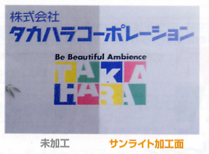

光觸媒應用產品與模組加工(設計、合作)與代工步驟：
1. 依客戶所需(討論用途、目標價)；使用環境條件，其抗菌或抗污、除臭....等不同功能是否可行。
2. 依被加工材料或元件，選用最佳之光觸媒原料及最佳節省原料之加工法。
3. 產品或模組使用光學設計，使其充份發揮其效果。
4. 其它(專利、安規、效能驗證...等)。
世屋光觸媒加工自2002年從日本引進台灣，已具有20多年之加工技術與經驗，並榮獲政府研發補助。

■光觸媒具有抗污優點功能，可使用在任何的建材上，但是不同的建材有不同的施工或加工法，在此先不談論其材質的屬性，光觸媒的抗污功能來自於親水性及分解有機物的能力，以台北市的空氣污染大多為汽車所排放之廢氣(硫化物、氮化物)，以及施工所造成之灰塵，近年來又增加了來自大陸的沙塵暴超微粉塵之污染，因此大樓很容易就變得髒髒的，以台北市的商業及辦公大樓而言，大約只有不到百分之十的大樓有定期清洗，而近年來景氣不佳，企業主為了節省成本採用廉價的清潔業者，為了節省成本大都使用較強之酸鹼清洗，造成材質表面受損，更容易變髒，惡性循環使得企業想保持亮麗的外觀，在選擇低單價的清洗法後，反而要花更多次的錢去維護其外觀，實在為不智之舉。
■ 因此光觸媒抗污可使用在建材之前加工與建物之後加工，兩種維護方式其實是不同的，消費者必需詳細了解(而非直接噴塗上就可長期抗污)。

■ 上圖說明了光觸媒因有超親水性的功能，所以經過下雨後雨水就與光觸媒結合成為水膜，將原本黏在光觸媒薄膜上的污垢給分離掉，相對的來說，它還可以防霧，就如同我們在玻璃上塗了一層肥皂的道理般，而這部分在使用上，必須考慮各地天候因素做不同調整。
■ 光是一種能量的波，奈米化二氧化鈦(Nano Tio則是觸媒，經過太陽光的照射而激發超氧化能力，它將空氣中的水份反應成氫氧自由基，使有機物分解成無害的水和二氧化碳，聽起來似乎很神奇，的確是如此，能使光觸媒達到最佳的作用有三大要素：濕度高(60%以上)、光線足(太陽光照射足)、氣溫高(15度以上)20-30度更佳，這都非常符合台灣濕熱的環境。
■如果是在乾燥、低溫、少許光源，光觸媒的效果就足以將表面的細菌分解掉，這也顯示其除菌效果。
■光觸媒除上述功能外還有一個很大功能它可以抗UV，一般我們的建材退色的原因都大都是紫外線的因素，其氧化鈦材料具有高穩定，對人體無因此市面上的抗UV化妝品也是使用它，因此它對抗UV有加分的效果。
■理論值上，則可以因具有抗污功能，可用於太陽能光電板上，減少太陽能板因污染物所減少吸收之光源，依照國外實驗數據以六個月來看，至少可以多出6%以上之吸收能力，空氣及具有沙塵多處，其效果更優，尤其在市區之太陽能板，更可多出10%以上之發電能力，以及在減少太陽能板之清洗之維護費用，其貢獻更大。但實際必須看設置地點，才能決定是否合乎經濟效益。。
■商業化之商品包含磁磚、玻璃圍成熟之商品，此部分大多數使用都在於日本建物上，2005世博日本館至2015年世博會館及義大利會館均使用此技術，向全球展示其效果。


1. 依客戶所需(討論用途、目標價)；使用環境條件，其抗菌或抗污、除臭....等不同功能是否可行。
2. 依被加工材料或元件，選用最佳之光觸媒原料及最佳節省原料之加工法。
3. 產品或模組使用光學設計，使其充份發揮其效果。
4. 其它(專利、安規、效能驗證...等)。
世屋光觸媒加工自2002年從日本引進台灣，已具有20多年之加工技術與經驗，並榮獲政府研發補助。